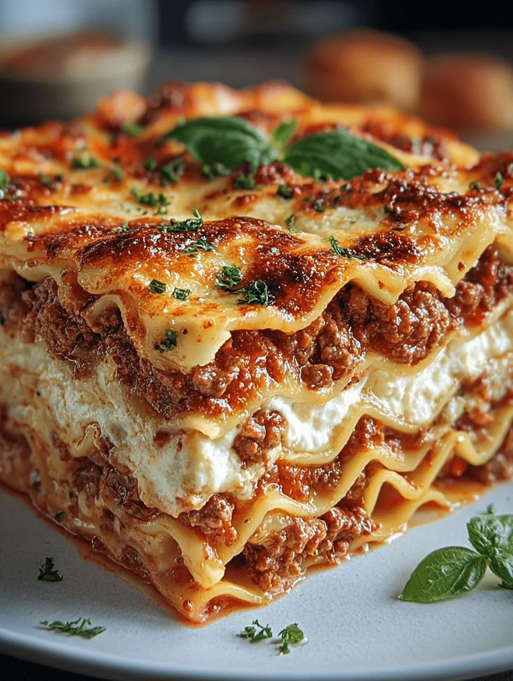

HOME
Lasagna
Lasagna is a classic Italian dish made with layers of pasta, meat sauce, and cheese.
Ingredients
- Meat Sauce (Bolognese)
- Ground Meat
- Tomato Base
- Herbs & Seasoning
- Liquid
- Cheese Filling (Ricotta Mixture)
- Ricotta Cheese
- Egg

Instructions(steps)
- Preheat the oven to 375°F (190°C).
- Cook the lasagna noodles according to the package instructions.
- Prepare the meat sauce by browning the ground meat and adding the tomato base and herbs.
- Prepare the cheese filling by mixing the ricotta cheese with the egg.
- Assemble the lasagna by layering the noodles, meat sauce, and cheese filling.
- Top with shredded mozzarella cheese.
- Bake for 30-40 minutes until golden brown.